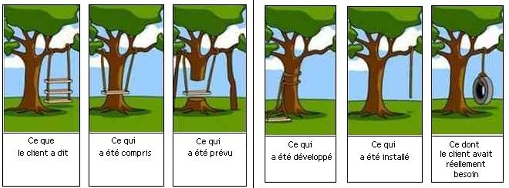
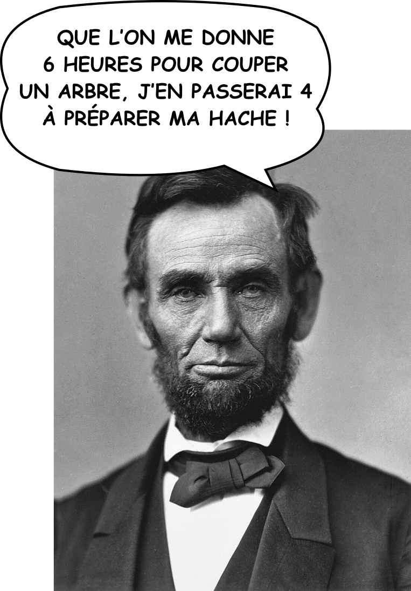

2 - Cahier des charges#
Le Module Cahier des Charges est le premier d’une longue série. Il vous donnera les clés pour bien définir votre projet, et vous permettra également de vous mettre dans la peau d’un chef de projet (enfin ça reste à voir).
Informations
✍ - Vincent
🚧 - En cours
🔨 - 12/08/2025
🕑 - 20 - 30 min
Syllabus
Module 2: Réaliser le cahier des charges
Objectif global: L’objectif global est que l’apprenant maîtrise les étapes de la construction d’un cahier des charges et puisse remplir son cahier des charges tout au long de sa formation.
Objectif pédagogiques:
Découvrir et maîtriser les étapes de la construction d’un cahier des charges afin de pouvoir remplir son cahier des charges tout au long de sa formation
Avoir la méthode et les outils pour définir le contexte, la présentation de l’entreprise, les objectifs du projet, le planning prévisionnel et les cibles
Plan de cours:
I. Contexte :
Décrire la genèse du projet
II. Présentation de l’entreprise :
Date de création
Activité principale
Services ou produits vendus
Principaux axes de développement
III. Objectifs du projet :
Objectifs quantitatifs et qualitatifs du projet
IV. Livrables :
Présentation des livrables (fournir liste des livrables selon TP)
V. Planning prévisionnel :
Agenda des dates souhaitées pour la validation des différentes étapes (fournir les dates des grandes étapes et des livrables)
VI. Cibles :
Description du profil des clients de votre entreprise et celui des visiteurs de votre site web
Livrables:
Avoir une trame de cahier des charges
Avoir la méthode et les outils pour définir le contexte, la présentation de l’entreprise, les objectifs du projet, le planning prévisionnel et les cibles.
Support de Cours
Avant de Commencer#
Avez-vous un Projet ?
Votre Ikigai#
Note
Créer une version interactive du Ikigai avec un template
Faire un lien vers mon propre Ikigai
🤔 Ce dont le monde a besoin ?
C’est peut-être la partie la plus difficile de la création d’un projet, et pourtant c’est à mon sens la plus importante.
Les Objectifs de Développement Durable#
Autres outils#
Note
Pour trouver des idées parmi les domaines “trendy”
Canvanizer#
Warning
Très bon site, à exploiter pour les atelier libre ou avec le formateur pour la phase d’idéation de son projet
Bravo ! Tu es désormais un Maitre d’Ouvrage#
Blabla, oui tu as …
La Gestion de Projet#
Les parties prenantes#
Maitre d’ouvrage
Maitre d’oeuvre
CDUI vs CDP e-Commerce#
Petite question
Lors des premières sessions il y a eu pas mal de confusions entre Concepteur Designer d’Interface Utilisateur (l’intitulé du titre professionel - le diplome que vous allez obtenir) et Chef de Projet e-commerce (l’intitulé de notre formation).
{kind=link}
Le Cahier des Charges#
C’est Quoi ?#
Pourquoi Faire ?#
Et bien pour éviter de ce trouver dans ce genre de situations
{kind=link}

Figure représentant les différences de compréhension d’un même besoin part différentes partie prenantes#
Un cahier des charges a pour objectif de formaliser un besoin afin que ce dernier soit compris par l’ensemble des acteurs impliqués dans le projet.
Un cahier des charges permet de comparer des offres (techniques, financières) de prestataires (appelés aussi “maîtres d’oeuvre”).
Un cahier des charges est un document contractuel, qui permet à un Maître d’ouvrage et à son Maître d’œuvre de se mettre d’accord sur le périmètre du projet.
Enfin le cahier des charges peut aussi décrire les conditions postérieures à la livraison (période de garantie, maintenance corrective, évolutive, etc.).
La Pédagogie#
Pédagogie
Chargé de projet e-commerce
Note
Créer un génially qui explique un peu notre facon de voire la pédagogie
Besoins#
Example cahier des charges
Forme
Possibilité d’utiliser in Design
Pourquoi ?#
Un cahier des charges a pour objectif de formaliser un besoin afin que ce dernier soit compris par l'ensemble des acteurs impliqués dans le projet.
Note
Peut être présenter les différents acteurs d’un projet e-commerce pour bien identifier les missions de chacun et illustrer le besoin de travailler en équipe
Un cahier des charges : c’est quoi ?#
Le cahier des charges est un document contractuel entre le maître d’ouvrage et le maître d’œuvre
Deux types de cahier des charges:
Le cahier des charges technique
Le cahier des charges fonctionnel (CDCF) (norme européenne NF EN 16271)
Pour bien comprendre lequel des deux vous devez réaliser et aussi parce que vous en êtes au début de votre aventure, plongeons nous dans les attendus du diplôme, et donc de ce que le jury attend de vous.
Note
Créer un génially avec les différents attendus du jury
séparer les différentes compétences sur chaque slide et introduire en même temps les différents attendus du cahier des charges
Extrait Depuis Opquast#
Un cahier des charges, pourquoi ?#
La rédaction du cahier des charges est une étape fondamentale du processus de conception d’un site web. Le cahier des charges est utile à plusieurs titres. Il sert entre autres à :
définir et formaliser les objectifs du site par rapport à ses utilisateurs ;
déterminer ses principaux aspects fonctionnels ;
faire comprendre le projet aux équipes opérationnelles ;
estimer les moyens nécessaires à la production du site.
Idéalement, le cahier des charges constitue une traduction des besoins et attentes des utilisateurs internes et externes du site. Les règles d’assurance qualité proposées par Opquast sont fondamentales. Elles le sont à tel point qu’il est tentant de considérer leur liste comme un cahier des charges en lui-même. Prenez garde toutefois, cette approche est dangereuse. En aucun cas, les règles Opquast ne se substituent aux exigences fonctionnelles. C’est pourquoi nous allons délibérément les oublier pour le moment, pour nous focaliser sur les contenus et les services.
Contenus et services#
En pratique, la première mission du rédacteur du cahier des charges est de répondre aux questions suivantes :
À qui le site s’adresse-t-il, quelle est sa cible ?
Quelles sont les attentes et les besoins de cette cible ?
Quels sont les objectifs du site ?
Quels sont les contenus du site ? Comment sont-ils organisés ? Qui sera chargé de les produire et de les faire vivre ?
Quels sont les services proposés ? Quels impacts auront-ils sur le fonctionnement de l’entité qui propose le site ? Qui sera chargé de les produire et de les faire vivre ?
Le simple fait de se poser ces questions devrait conduire à la mise au point d’un cahier des charges minimal qui pose efficacement les enjeux du site et explique notamment à quoi il sert. Cela peut sembler évident, mais de nombreux cahiers des charges omettent cette information pourtant primordiale.
Un tel cahier des charges est bien sûr insuffisant. Néanmoins, en procédant de cette façon, vous êtes certain qu’il n’est au moins pas vide de sens.
Interface, visibilité et aspects techniques#
Après avoir défini les objectifs du site, ses contenus et ses services, vous pouvez coupler ce travail à une réflexion sur son interface. Pour cela, vous rédigerez vos attentes ou procéderez directement à un prototypage rapide lequel vous permettra de travailler sur la navigation et de valider l’architecture de l’information. Les prototypes réalisés à ce stade serviront de base à la production ultérieure de prototypes définitifs. Lors de la rédaction du cahier des charges, il conviendra également de se poser la question de la visibilité du site, en essayant de répondre à la question suivante : Comment feront les utilisateurs potentiels du site pour trouver les contenus et services ? Cela vous conduira à relire le cahier des charges et éventuellement à l’enrichir d’un ensemble d’attentes concernant la visibilité. Attention, il ne s’agit pas uniquement de référencement, mais bien de visibilité au sens large. Quand vous aurez achevé ce travail de réflexion, il vous restera à traiter les questions techniques. Même si ce n’est pas toujours facile de les laisser de côté, le fait de n’approfondir les questions techniques qu’en dernier lieu a de grands avantages. Cela vous empêchera de construire un site en fonction de la technologie choisie et, à l’inverse, vous poussera à choisir des technologies adaptées aux contenus et services. À ce stade de la rédaction de votre cahier des charges, vous disposerez d’un socle tout à fait solide, sans même avoir utilisé les règles d’assurance qualité web Opquast.
Et maintenant les règles#
À ce stade, votre cahier des charges précise vos besoins en termes de contenus et services, ainsi que vos attentes concernant l’interface, la visibilité du site et les solutions techniques. Il est maintenant temps de le consolider. Les cahiers des charges de sites internet sont parsemés d’exigences génériques. On y lit fréquemment des affirmations aussi vagues que « le site aura un système de navigation intuitif » ou bien « le site sera configuré correctement pour être référencé dans les moteurs de recherche », ou encore, le grand classique « le site sera accessible aux personnes handicapées ».
À la réception de ce type de cahier des charges, les prestataires interpréteront ces exigences en fonction de la compréhension qu’ils en ont. Car la même exigence (ex. « je veux un site ergonomique ») peut désigner des choses complètement différentes pour deux agences web. Nous vous conseillons donc de passer en revue la liste des règles et de choisir celles qui vous semblent fondamentales pour votre projet.
Le passage en revue du cahier des charges pour y intégrer des règles d’assurance qualité web permet d’atteindre les objectifs suivants :
préciser les exigences et le niveau de qualité attendu ;
prévenir les risques de non-qualité ;
définir les exigences techniques et fonctionnelles du client ;
aider le prestataire à mieux estimer la quantité de travail nécessaire à l’élaboration du projet. L’intégration des règles dans un cahier des charges est une question essentielle qui décide en grande partie de l’avenir et de la réussite du projet. Les règles vous aideront à consolider votre projet et à définir les points sur lesquels vous ne devez pas transiger.
En Pratique#
La Gestion de Projet#
🤔 T'es bien gentil Abraham, mais je suis pas bucheron moi, je suis chef de projet e-commerce ...
Et pourtant, il dit quelque chose de très important ce grand monsieur.
{kind=link}

Ce bon vieux Abraham Lincoln qui nous éclair de sa lanterne 💡#
En Plus#
Résumé#
Test tes connaissances#
Note
Créer un grand Storyline pour ajouter un questionnaire a chaque cours, enregistre la progression de l’apprenant et offre une collection de badge !!
Ressources#
Sources
Le fonctionnement de l’Internet - Licence CC
Autres Ressources
Information Management: A Proposal - Tim Berners Lee - Le proposal
TheProject : La première page avant wwww
Commentaires#
Note
Lien vers formulaire de feedback + possibilité de donner son avis dans les commentaires.